A propos de moi
Parcours Professionnel
- A.Karin Céramique, Uzès - Céramiste 2023 - 4 mois
- 1976 Ébénisterie, Langogne 2022 - 1 mois
- Maison Sinnae, Laudun - Vendeuse 2019 - 2 mois
- Agence immobilière ERA, Bagnols sur cèze 2018 - 1 mois
- Bocage, Montpellier (vente de chaussures) 2018 - 1 mois
Parcours académique
- CDUI: Concepteur Designer UI Formation POEI
2025 Dawan (Toulouse) - Bachelor DNMADE (Diplôme National des Métiers d’Art et du Design) objet
2021/2024 Lycée Saint Pierre Saint Paul (Langogne) - Préservation/ Restauration d'œuvres d'art
2020/2021 École de Condé (Lyon) - Baccalauréat Accueil et relation client et usager
2017/2020 Lycée Albert Einstein (Bagnols sur cèze)
Soft Skills
- Indesign
- Procreate
- Photoshop
- Figma
- Illustrator
Mes Projets
 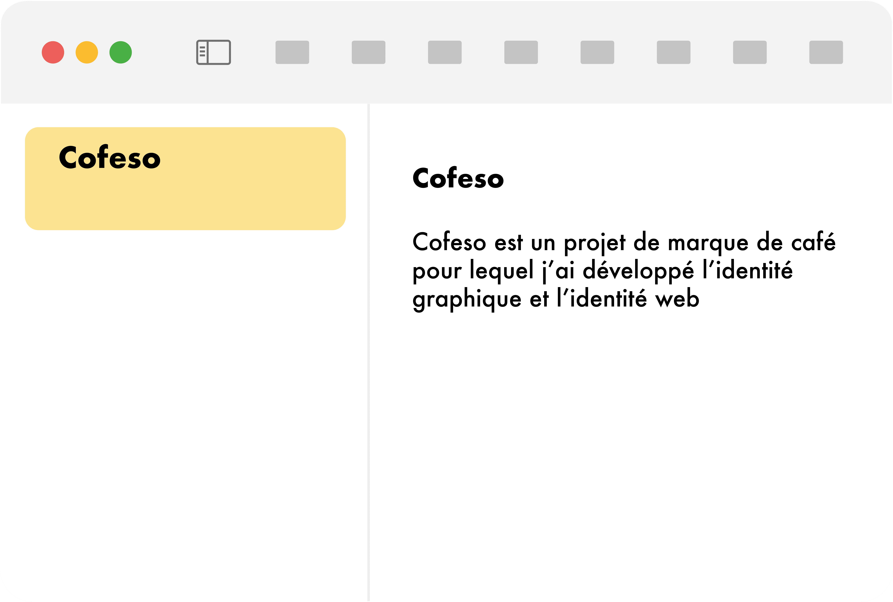
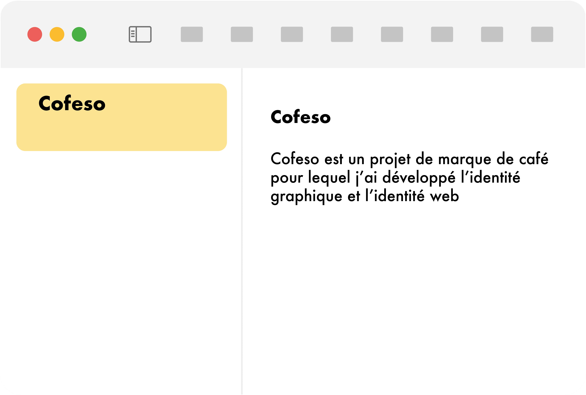
1.DailyFrog
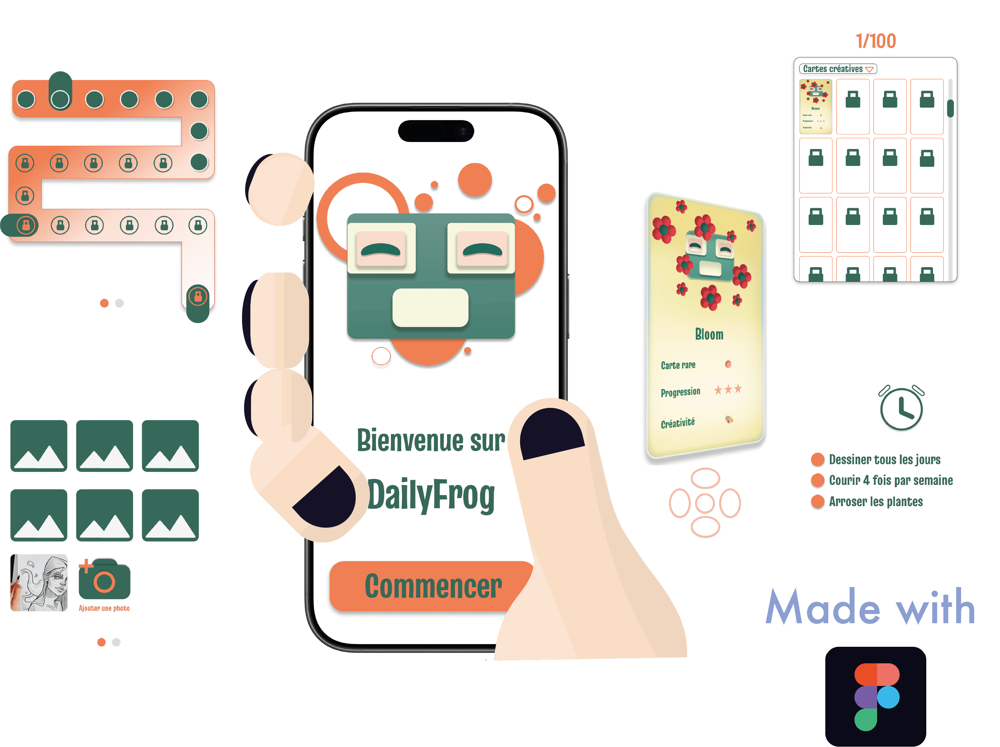Persona
Alice Menant
sociable-avenante-indépendante
A propos
- Alice est une personne déterminée, toujours animée par une attitude positive et une grande ambition dans tout ce qu'elle entreprend. Elle aime aussi faire de nouvelles rencontres.
- n’arrive pas à garder ses habitudes au bout de 5 jours et ne trouve pas d’application qui lui correspond
Bio
- 25 ans
- RH
- Célibataire
- aime le sport et manger sainement
- Envie de voyager
- Tennis, Pilate
- Habite à Paris
Objectifs
- trouver un moyen de maintenir de nouvelles habitudes et rester motivé
- Faire quelque chose qui est impactant et utile
- utilise quotidiennement son téléphone, aime les rappels et les interfaces minimalistes
DailyFrog est une application fictive conçue pour aider les utilisateurs à intégrer de nouvelles habitudes dans leur vie quotidienne. L’objectif est de rendre ces nouvelles pratiques naturelles et automatiques avec le temps. Elle propose un accompagnement sur une période de 21 jours, bien que cette durée soit populaire, des recherches récentes montrent que former une habitude solide peut prendre en moyenne 66 jours, selon la personne et la complexité du comportement.
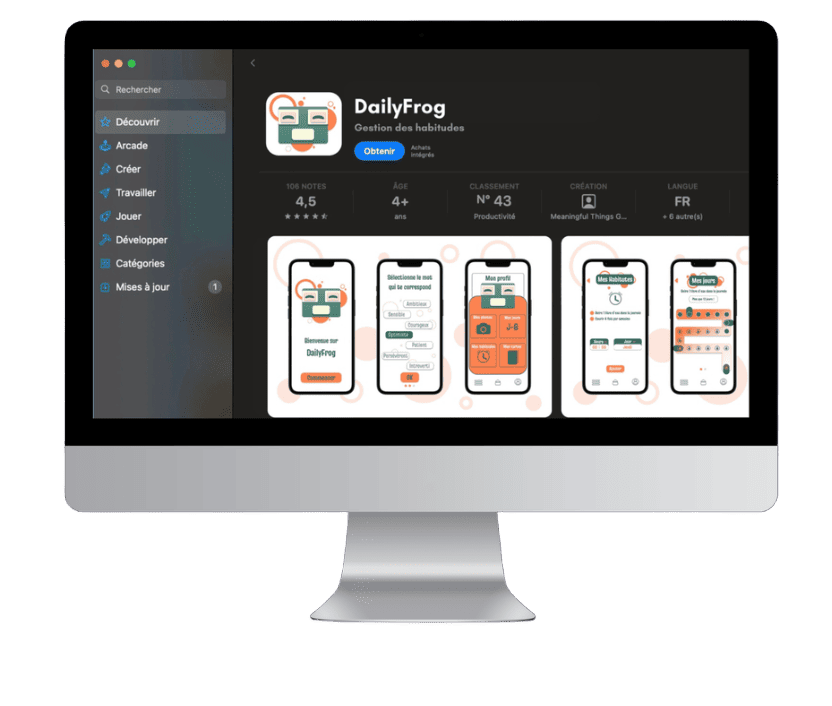J’ai préalablement réalisé une analyse de trois applications similaires, en étudiant les commentaires des utilisateurs et en établissant un tableau récapitulatif des points forts et des points faibles. Pendant un cycle de 21 jours, l’utilisateur peut débloquer jusqu’à 5 cartes : une tous les 5 jours, et une carte spéciale le 21ème jour pour son engagement. À chaque tâche accomplie, l’utilisateur prend une photo de son activité pour valider ses progrès et rester motivé.
Le parcours est structuré en paliers de 21 jours, une durée volontairement choisie pour rendre le changement plus accessible. Ce format permet de se concentrer sur des objectifs à court terme, tout en facilitant une progression continue. À la fin de chaque palier, l'utilisateur peut choisir de relancer un nouveau cycle de 21 jours, favorisant ainsi une intégration en douceur et durable des habitudes dans son quotidien. Ce découpage progressif aide à maintenir la motivation, sans avoir l’impression de s’engager dans un effort trop long dès le départ.

Interaction entre les frames
Il s'agit ici d'interactions entre chaque frame permettant de simuler la navigation et de donner un aperçu réaliste de l'utilisation de l'application.
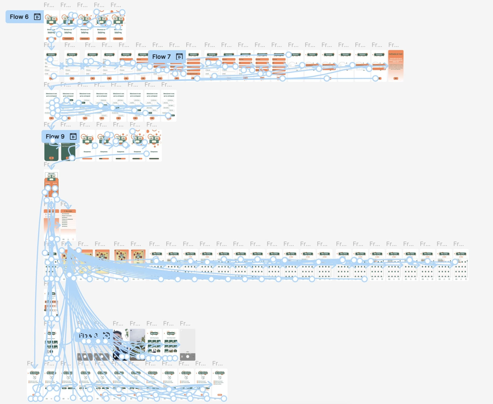HeatMaps
J’ai mené un test utilisateur via la plateforme Maze pour évaluer mon prototype. Ce test m’a permis de constater que le design manquait d’intuitivité lors de la navigation : les utilisateurs avaient du mal à identifier où cliquer, faute d’éléments visuels et interactifs suffisamment clairs.
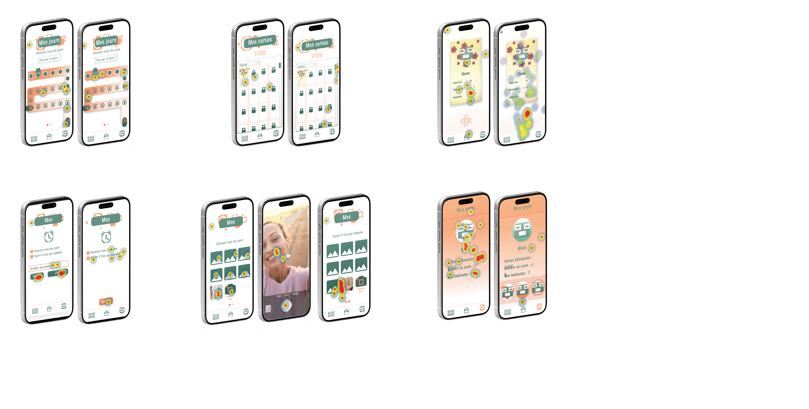 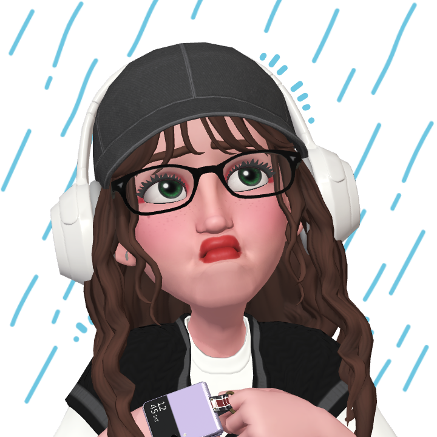Observations
Navigation confuse sur l’interface : l'utilisateur semble perdu, appuie un peu partout sur l’écran sans suivre de parcours clair.
Écran "Mes cartes" : L’utilisateur n’a pas utilisé les boutons de direction. Agrandir ou rendre plus visibles ces boutons pour encourager l’interaction.
Écran "Mes habitudes" : L’utilisateur met du temps à comprendre qu’il faut faire défiler vers le haut pour modifier l’heure et le jour. Ajouter un indice visuel pour guider l’interaction.
Écran "Mon profil" : L’option "Modifier" n’est pas suffisamment visible. Mettre davantage en évidence ce bouton.
Interaction avec les photos : L’utilisateur aimerait voir les photos en grand. Ajouter une interaction pour agrandir les photos.
Écran "Mes jours" : L’utilisateur ne comprend pas directement qu’il faut glisser vers la gauche. Rendre cette section plus identifiable ou accessible. Ajouter un indice visuel (ex : flèche, animation).
2.Ceveop
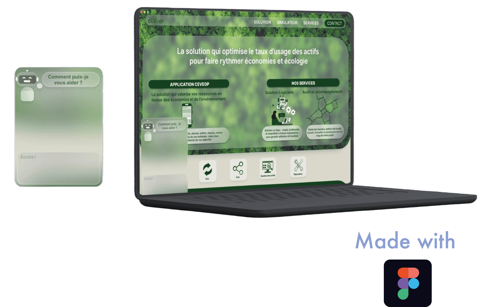Que fait Ceveop
Un suivi complet des équipements tout au long de leur cycle de vie
Le don et la récupération de matériels d’occasion pour leur offrir une seconde vie, réduisant ainsi le gaspillage.
Mise en relation avec un réseau de partenaires pour la réparation des mobiliers, prolongeant ainsi leur durée de vie.
Offre des tableaux de bord interactifs permettant de visualiser en temps réel les économies réalisées, l'impact écologique évité et les coûts associés.
Fournit des outils pour évaluer l'impact environnemental des équipements et orienter les décisions vers des pratiques plus durables.
La plateforme CEVEOP est accessible via une connexion sécurisée avec double authentification garantissant ainsi un haut niveau de sécurité pour les utilisateurs.
Voici une proposition d’amélioration pour la start-up Ceveop. J’ai réfléchi à différents axes pour optimiser le site web, en mettant l’accent sur une meilleure mise en valeur des informations et une ergonomie plus efficace.
- Les boutons manquent de centrage
- Le numéro de téléphone est réparti sur deux lignes
- Le texte présente des variations d’espacement
- Les boutons redirigent vers la même page
- Apporter davantage de dynamisme au site
- Intégrer des logos des réseaux sociaux
- Mettre en avant les entreprises partenaires
- Afficher les valeurs de l’entreprise sur la page d’accueil
Recherche sur les couleurs
Schéma illustrant la consommation énergétique des couleurs sur les écrans
Consomme + d’énergie
Consomme - d’énergie
D’après cette photo, certaines couleurs consomment davantage d’énergie que d’autres. Plus une couleur est claire, plus elle entraîne une consommation élevée de batterie.
Anciennes couleurs
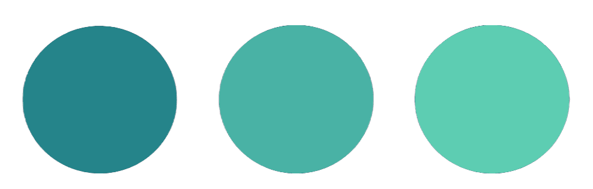Nouvelles couleurs
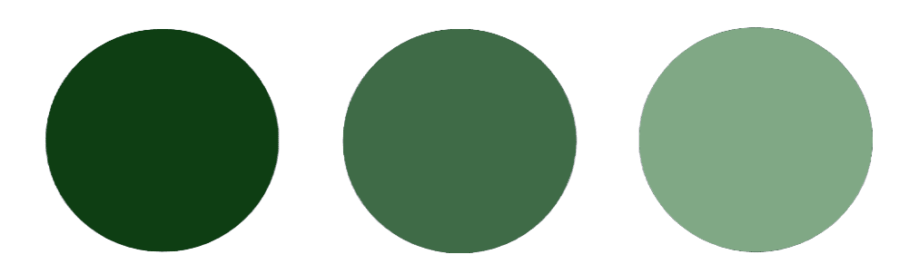DÉCLINAISON DE LOGO
Cette proposition de logo s’inspire des courbes, du CO₂ et les valeurs environnementales de la start-up.
Les trois premières lettres s’agrandissent pour illustrer la montée de la courbe. J’ai assombri les lettres 'c' et 'o' pour les mettre en valeur, et ajouté un deux pour CO₂.
PROTOTYPE DU SITE INTERNET
J’ai mis en avant les valeurs de la start-up en utilisant une image de végétation en arrière-plan, accompagnée de couleurs évoquant l’écologie.
J’ai choisi d’utiliser le style glassmorphisme pour l’interface afin de laisser apparaître l’image en arrière-plan, tout en mettant en valeur les autres éléments visuels au premier plan.
J’ai intégré un chatbot à l’interface du site afin d’offrir une assistance aux utilisateurs. Il permet d’interagir avec eux et de les accompagner tout au long de leur navigation.
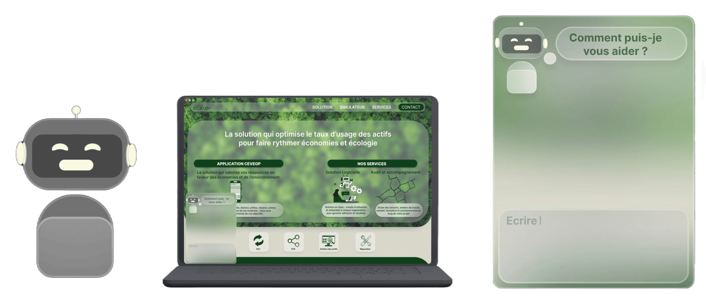3.Cofeso
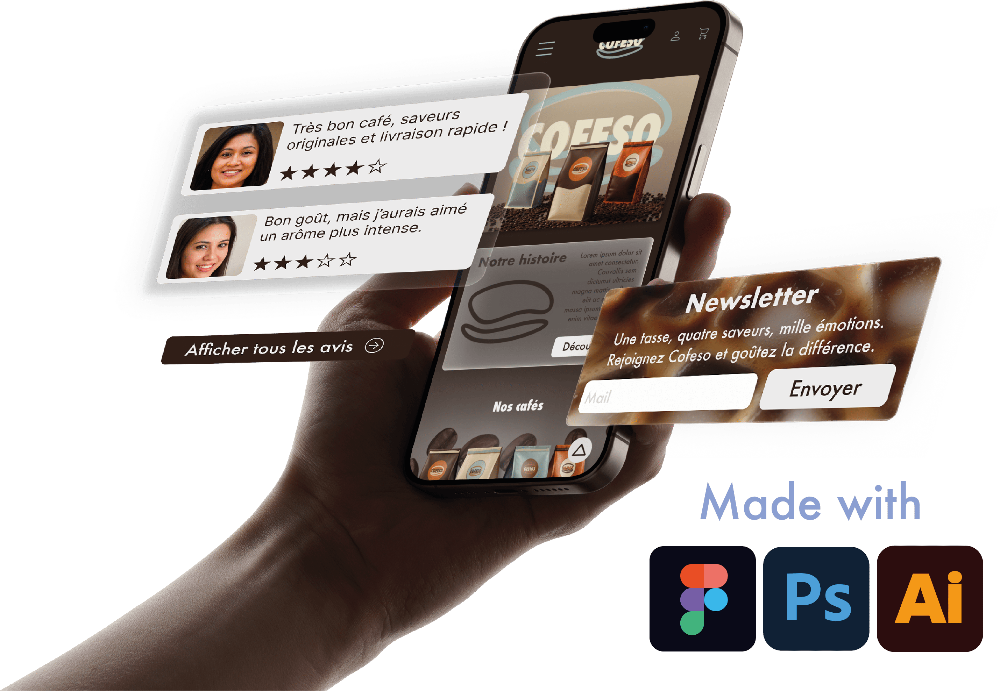Présentation de la marque
Cofeso est une marque de café soluble proposant quatre saveurs : Fraise, Chocolat, Vanille et Nature. L'objectif est d'offrir un café accessible et gourmand. Pour la direction artistique, il est important de créer un univers visuel attrayant qui donne envie de découvrir la marque. Cela passe par des images ou illustrations évocatrices, des couleurs gourmandes et un style légèrement premium, afin de transmettre le sérieux de la marque et la qualité des produits Cofeso.
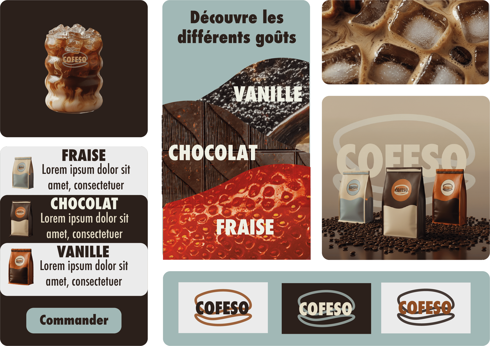Cahier des charges
Benchmark
Mon objectif est dʼanalyser la manière dont mes concurrents présentent leurs produits, les valeurs quʼils mettent en avant et leur niveau de transparence concernant la provenance, la composition et lʼaspect éco-responsable de leurs produits. Je souhaite également étudier leur stratégie marketing et leur communication afin de comprendre comment ils valorisent leur marque auprès du public. Il est essentiel, selon moi, de concevoir un site web clair et intuitif, afin que lʼutilisateur puisse facilement sʼy repérer et naviguer sans difficulté.
Les sites de Nescafé et LʼOr, bien que très différents sur le plan visuel, sont bien structurés et offrent une navigation fluide. Les CTA sont visibles et permettent dʼaccéder rapidement aux différentes pages, ce qui guide efficacement lʼutilisateur. Pour mon propre site, je veux miser sur la transparence : indiquer clairement lʼorigine des produits, leur mode de transport, et mʼinscrire dans une démarche éco-responsable. Je souhaite également jouer sur les matières et le sensoriel dans le design pour créer une expérience authentique et immersive autour du café
Persona
Laura Durant
A propos
- 25 ans
- Vendeuse chez Cultura
- Célibataire
- Paris
Empathique, Créative, Esprit d’équipe, Écoute attentive
Patiente 34%, Envie d’apprendre 78%, Curieuse 62%
Bio
Laura travaille comme vendeuse chez Cultura. Chaque matin, elle prend le métro pour se rendre au travail. Passionnée par la relation client, elle aime particulièrement aider et conseiller les personnes qui viennent en magasin. Le midi, elle déjeune avec ses collègues, un moment de convivialité quʼelle apprécie. Au quotidien, elle a lʼhabitude de boire deux cafés par jour, un rituel qui lʼaide à rester dynamique et concentrée.
Elle nʼaime pas :
- Quand la page met trop de temps à se charger.
- Quand il y a trop dʼinformations et trop de publicités sur le site.
Logotype
Comment le logo Cofeso a pris forme : étapes de conception
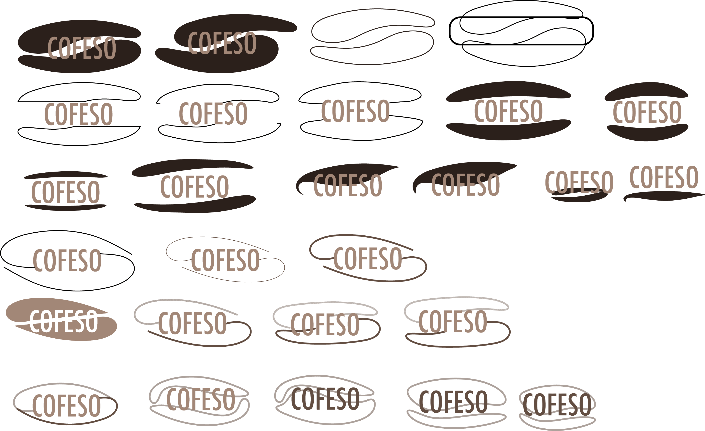Pistes alternatives et recherches de formes pour le logotype
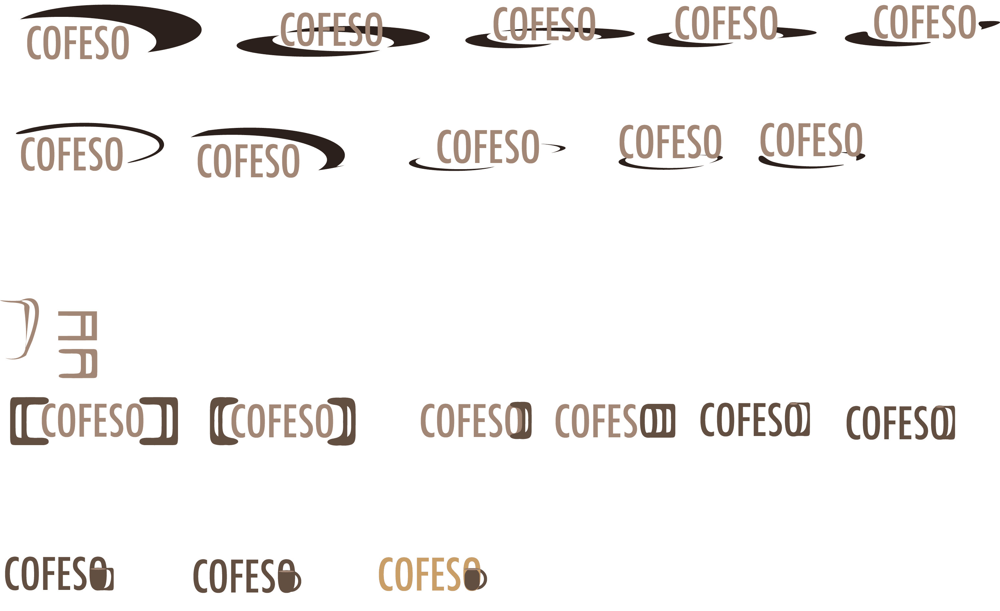Fond et couleurs
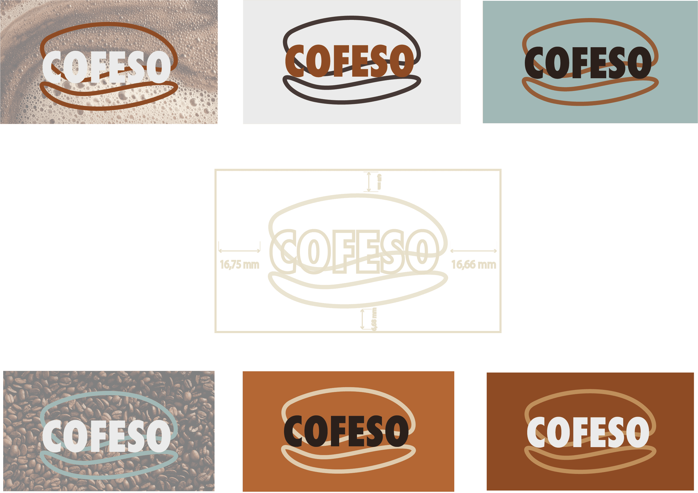Identité pour le web
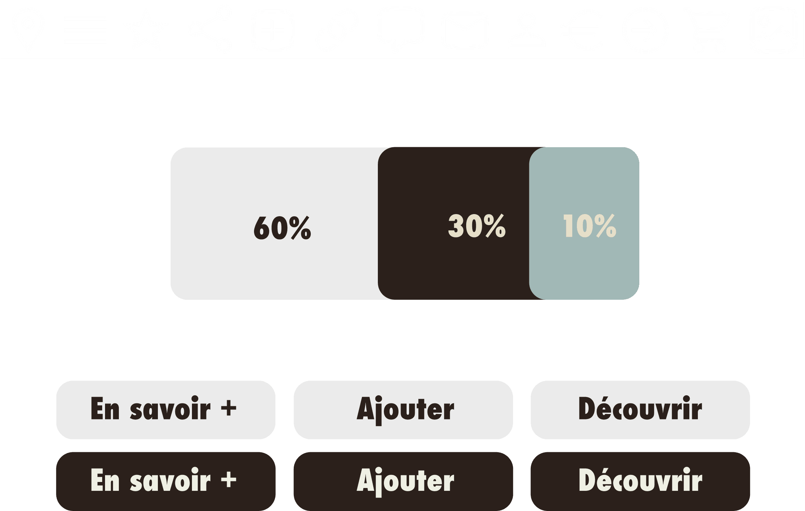Plan du site
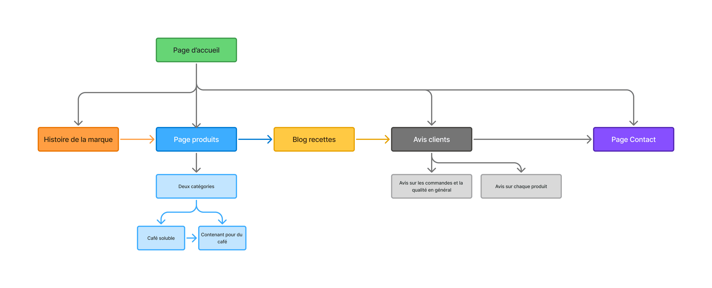Le plan du site présente l’ensemble des pages du site internet ainsi que son organisation.
Userflow
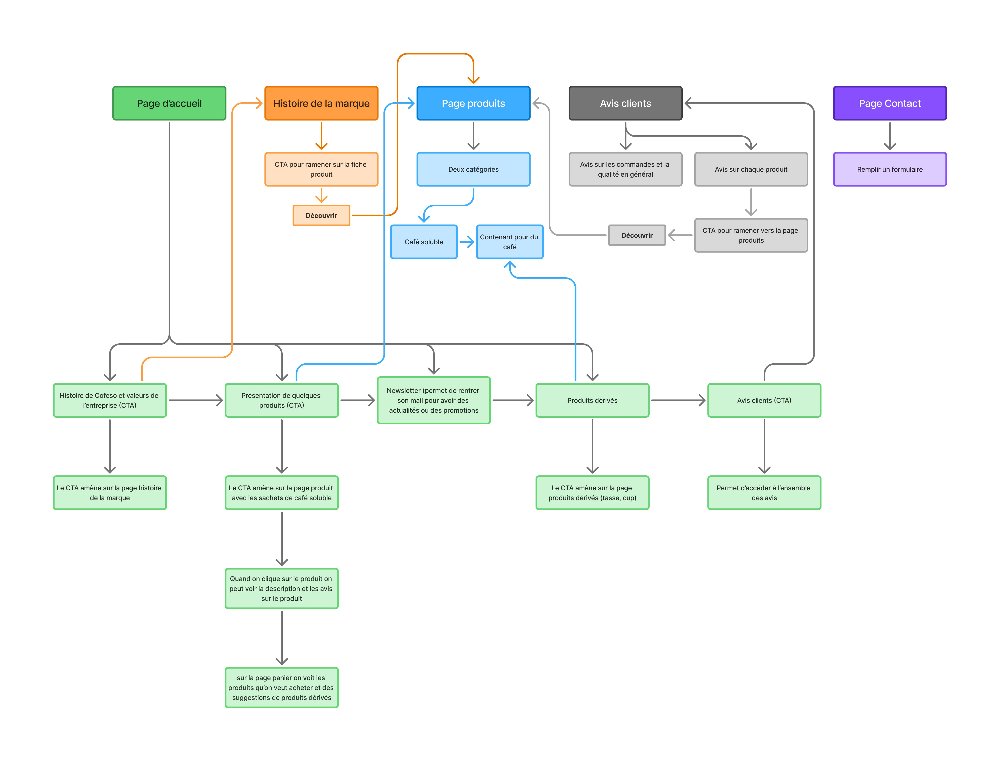L’user flow va me permettre de concevoir le parcours de l’utilisateur en lui faisant suivre un chemin bien défini.
Wireframe
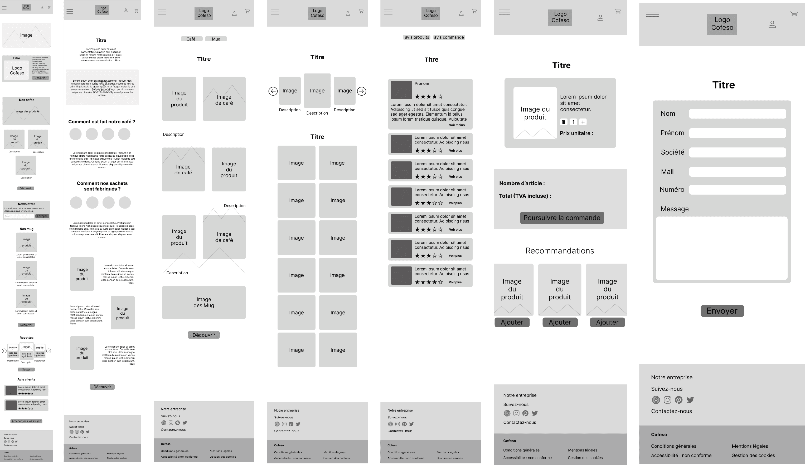Design System
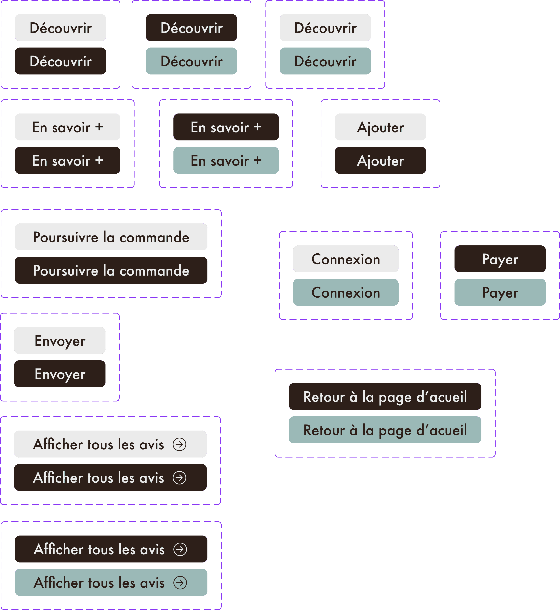Le design system comprend des CTA de différentes couleurs, sous forme de composants, afin d’améliorer le contraste et pour le while hovering
Prototype
Maquette
4.Les Fleurs
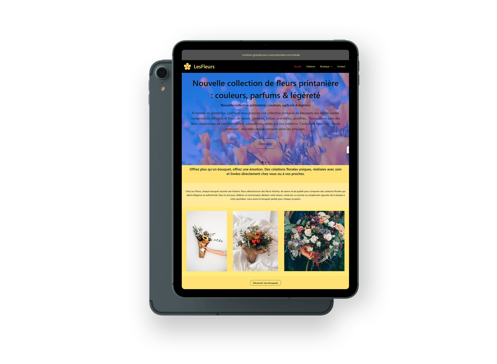J’ai conçu un site de vente de fleurs sous WordPress, comprenant plusieurs pages dédiées à l’actualité, à la localisation de la boutique, à la présentation des bouquets en vente, aux avis clients, ainsi qu’à la publication d’articles permettant de maintenir le site à jour pour le référencement.

Sur la page de vente, j’ai rédigé une description détaillée des produits en intégrant des mots-clés pertinents afin d’optimiser le référencement naturel. Pour le design, j’ai utilisé différentes extensions afin d’élargir les possibilités de personnalisation du site.